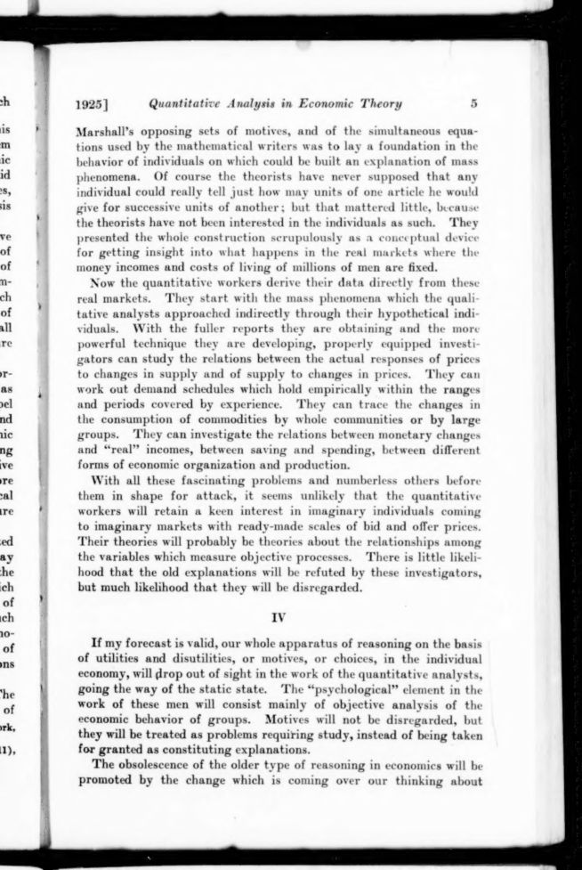

Gephart, 1924: controlar o crédito não é estabilizar preços
Leitura: 5 min
No comentário ao texto de Commons, Gephart concorda que falta entender o Federal Reserve, mas nega que controlar a situação do crédito equivalha a produzir preços estáveis e pede ao sistema que se apresse devagar.


Duas vezes a ira popular destruiu um sistema de banco central nos Estados Unidos, lembra W. F. Gephart no fim de seu comentário ao texto de John R. Commons. O aviso fecha a discussão da sessão de Chicago sobre o problema monetário mundial, publicada no número de março de 1925 da American Economic Review, e resume a posição do debatedor: o Federal Reserve presta um serviço quase indispensável, mas não deve prometer o que não pode entregar.
O que Gephart aceita no texto de Commons?
Gephart resume o texto em três pontos. Primeiro, o sistema de reserva pode prestar grande serviço público, e um dos mais importantes seria tornar os preços mais estáveis pelo controle do crédito, por meio do mercado aberto, do redesconto e de outras atividades. Segundo, empresários e banqueiros precisam entender melhor o que é um nível de preços e o que o sistema pode fazer. Terceiro, o Board teria agido bem ao falar em “controle da situação geral do crédito”, e não em “produzir níveis de preços estáveis”, como no projeto original da lei.
Sobre o segundo ponto, concorda inteiramente e vai além: também os estudiosos de bancos precisariam entender melhor o que os autores da lei pretendiam e os limites práticos de um órgão “quase político” diante de milhares de bancos e empresas. A renovação das cartas dos bancos de reserva se aproximava, e os críticos não diminuíam nem em número nem em loquacidade. Se à oposição de muitos banqueiros do interior se somasse a dos grandes bancos das cidades, diz, a perspectiva do sistema não seria promissora.
O mercado aberto prejudicou os bancos comerciais?
Muitos banqueiros comerciais criticavam as operações de mercado aberto do ano anterior por acharem que tinham afetado seriamente suas taxas. Para os estudiosos mais cuidadosos, responde Gephart, o efeito foi pequeno, porque havia abundância de crédito bancário. Mas ele vê um conflito de interesses: os bancos-membros são acionistas do sistema e esperam dividendos, e nas condições do ano os bancos de reserva só lucrariam operando no mercado aberto. O banqueiro não pode esperar lucros e, ao mesmo tempo, exigir que o sistema não concorra com ele.
Muitos banqueiros, acrescenta, não tinham compreendido que um banco central restrito a fornecer moeda de emergência não serviria a muitos dos fins para os quais existe. Isso mostraria o quanto ainda se estava longe de decidir o que um banco central pode fazer e o que se quer que ele faça; seria preciso acertar um campo de operação antes da renovação das cartas.
Onde está a divergência?
A discordância está no terceiro ponto. Há, diz Gephart, duas dúvidas: se o Federal Reserve, ou qualquer banco central, consegue na prática controlar a situação do crédito; e, se conseguir, se isso produz estabilidade de preços. Commons, a seu ver, supõe uma identidade entre as duas coisas.
“Não concordo que essas coisas sejam iguais, mesmo que, como dificilmente parece possível, o sistema federal de reserva possa controlar muito completamente a situação geral do crédito.” (I do not agree that these things are the same, even if, as hardly seems possible, the federal reserve system can very completely control the general credit situation.)
O nível de preços, explica, é função de um número muito grande de variáveis, e o crédito é apenas um fator. As mesmas condições fundamentais que aumentam ou reduzem a demanda de crédito empurram os preços para cima ou para baixo. Mesmo com um sistema perfeito e políticas de sabedoria sobre-humana, conclui, não se teriam preços estáveis nem aproximadamente estáveis. O que o sistema pode fazer é estudar as forças que afetam crédito e preços, agir a tempo e advertir, obtendo a cooperação dos bancos e evitando em parte a expansão excessiva.
Por que apressar-se devagar?
O fecho é institucional. O Federal Reserve é uma organização semipolítica, alvo fácil de descontentes, que a muitos parece um monopólio gigante com poder sobre a prosperidade de cada um e a quem se atribui um poder que não tem. Por isso deveria “apressar-se devagar” até que empresários e banqueiros o entendessem melhor; seus amigos não deveriam pedir demais, e o sistema mostraria sabedoria ao não atender às expectativas de seus defensores mais entusiasmados.
Na minha leitura
Na minha leitura, o comentário se dirige à premissa que sustenta o texto de Commons: a de que o crédito é a alavanca dos preços. Gephart não nega a utilidade do banco central; nega a relação simples de causa e efeito e prefere um sistema que advirta e coopere a um que prometa estabilidade.
O argumento político pesa tanto quanto o técnico. A lembrança dos dois bancos centrais destruídos pela hostilidade popular, os Bancos dos Estados Unidos do século XIX, mostra a fragilidade institucional do Federal Reserve diante da renovação de suas cartas. A prudência que ele recomenda é uma forma de proteger o sistema.
Glossário
- Carta (charter)
- autorização legal de funcionamento de um banco, com prazo de validade.
- Bancos do interior
- bancos pequenos de cidades do interior, muitas vezes hostis ao sistema de reserva.
- Moeda de emergência
- emissão destinada a atender crises de liquidez, função original de vários bancos centrais.
Fontes
- Discussion — W. F. Gephart (pp. 67–69). Internet Archive (número completo, PDF)
- Edição completa, com os demais artigos: Nº 189 do Arquivo.
Documento em domínio público (EUA, publicado antes de 1931), via JSTOR Early Journal Content e Internet Archive. Resumo e comentário do autor deste site, sem afiliação com a American Economic Association. Encontrou um erro? Escreva: a correção é publicada no próprio texto, com data.
← Bellerby, 1924: a política monetária como problema internacional ↑ Nº 189 · Mitchell e a medida, Commons e o Fed, Hansen e o salário real Fay, 1925: o mercado de trigo de Londres por volta de 1800 →